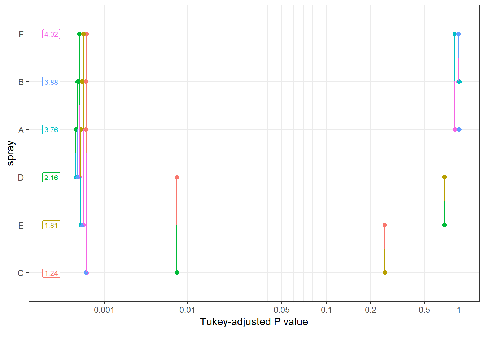

The following object is masked from 'package:dplyr':
select
Attaching package: 'TH.data'
The following object is masked from 'package:MASS':
geyser
cld(m2_medias)
spray emmean SE df lower.CL upper.CL .group
C 1.24 0.181 66 0.883 1.61 1
E 1.81 0.181 66 1.447 2.17 12
D 2.16 0.181 66 1.802 2.53 2
A 3.76 0.181 66 3.399 4.12 3
B 3.88 0.181 66 3.514 4.24 3
F 4.02 0.181 66 3.656 4.38 3
Confidence level used: 0.95
P value adjustment: tukey method for comparing a family of 6 estimates
significance level used: alpha = 0.05
NOTE: If two or more means share the same grouping symbol,
then we cannot show them to be different.
But we also did not show them to be the same.
pwpm(m2_medias)
A B C D E F
A [3.76] 0.9975 <.0001 <.0001 <.0001 0.9145
B -0.116 [3.88] <.0001 <.0001 <.0001 0.9936
C 2.516 2.632 [1.24] 0.0081 0.2513 <.0001
D 1.596 1.712 -0.919 [2.16] 0.7366 <.0001
E 1.951 2.067 -0.565 0.355 [1.81] <.0001
F -0.258 -0.142 -2.774 -1.854 -2.209 [4.02]
Row and column labels: spray
Upper triangle: P values adjust = "tukey"
Diagonal: [Estimates] (emmean)
Lower triangle: Comparisons (estimate) earlier vs. later
pwpp(m2_medias)

pairs(m2_medias)
contrast estimate SE df t.ratio p.value
A - B -0.116 0.257 66 -0.452 0.9975
A - C 2.516 0.257 66 9.807 <.0001
A - D 1.596 0.257 66 6.223 <.0001
A - E 1.951 0.257 66 7.606 <.0001
A - F -0.258 0.257 66 -1.006 0.9145
B - C 2.632 0.257 66 10.259 <.0001
B - D 1.712 0.257 66 6.675 <.0001
B - E 2.067 0.257 66 8.058 <.0001
B - F -0.142 0.257 66 -0.554 0.9936
C - D -0.919 0.257 66 -3.584 0.0081
C - E -0.565 0.257 66 -2.201 0.2513
C - F -2.774 0.257 66 -10.813 <.0001
D - E 0.355 0.257 66 1.383 0.7366
D - F -1.854 0.257 66 -7.229 <.0001
E - F -2.209 0.257 66 -8.612 <.0001
P value adjustment: tukey method for comparing a family of 6 estimates
Com os dados transformados o teste de Shapiro-wilk mostra que a distribuição pode ser considerada normal.
Os residuaos ficaram mais próximo ao esperado.
No teste de Barlett o p valor deu 58%, significa que tem-se 58% de chance de encontrar o valor determinado. Como o valor é maior que 0,05 as variâncias são consideradas homogêneas.
teste darma mostra se os tratamentos estão dentro da variância esperada e os agrupamentos estão de acordo com a saída da anova.
De acordo com a anova pelo menos uma média difere das demais.
Utilizando o pacote MASS - lambda valor de x em q y é o valor máximo (lambda 0.5 é igual a raiz quadrada).
Alternativa 2 teste não paramétrico
Nesta alternativa pode-se trabalhar com a saida original sem transformação. Usa-se a função kruskal() quando são 3 grupos ou mais.
$statistics
Chisq Df p.chisq t.value MSD
54.69134 5 1.510845e-10 1.996564 8.462804
$parameters
test p.ajusted name.t ntr alpha
Kruskal-Wallis none inseticida$spray 6 0.05
$means
inseticida.count rank std r Min Max Q25 Q50 Q75
A 14.500000 52.16667 4.719399 12 7 23 11.50 14.0 17.75
B 15.333333 54.83333 4.271115 12 7 21 12.50 16.5 17.50
C 2.083333 11.45833 1.975225 12 0 7 1.00 1.5 3.00
D 4.916667 25.58333 2.503028 12 2 12 3.75 5.0 5.00
E 3.500000 19.33333 1.732051 12 1 6 2.75 3.0 5.00
F 16.666667 55.62500 6.213378 12 9 26 12.50 15.0 22.50
$comparison
NULL
$groups
inseticida$count groups
F 55.62500 a
B 54.83333 a
A 52.16667 a
D 25.58333 b
E 19.33333 bc
C 11.45833 c
attr(,"class")
[1] "group"
Na hipótese nula - Ho: médias iguais, H1: rejeita a hipotese nula que as medias são iguais.
Pelo agrupamento m3, apresenta o resultado do teste de fisher (as letrinhas), cálculo da média dos tratamentose e o ranking de ordenamento do menor para o maior. Pode-se ver nos resultados, 3 grupos - a, b e c. Resultados que batem com o boxplot gerado anteriormente.
pode-se observar que o modelo não-paramétrico apresentou o resultado igual ao paramétrico transformado.
Alternativa 3 - GLMs
O modelo 4 não assume a distribuição normal. Portanto, usa-se um modelo diferente: modelo linear generalizado.
spray rate SE df asymp.LCL asymp.UCL
A 14.50 1.099 Inf 12.50 16.82
B 15.33 1.130 Inf 13.27 17.72
C 2.08 0.417 Inf 1.41 3.08
D 4.92 0.640 Inf 3.81 6.35
E 3.50 0.540 Inf 2.59 4.74
F 16.67 1.179 Inf 14.51 19.14
Confidence level used: 0.95
Intervals are back-transformed from the log scale
cld(m4_medias)
spray rate SE df asymp.LCL asymp.UCL .group
C 2.08 0.417 Inf 1.41 3.08 1
E 3.50 0.540 Inf 2.59 4.74 12
D 4.92 0.640 Inf 3.81 6.35 2
A 14.50 1.099 Inf 12.50 16.82 3
B 15.33 1.130 Inf 13.27 17.72 3
F 16.67 1.179 Inf 14.51 19.14 3
Confidence level used: 0.95
Intervals are back-transformed from the log scale
P value adjustment: tukey method for comparing a family of 6 estimates
Tests are performed on the log scale
significance level used: alpha = 0.05
NOTE: If two or more means share the same grouping symbol,
then we cannot show them to be different.
But we also did not show them to be the same.
Isso ajusta um modelo de regressão Poisson onde a variável dependente é count e a variável independente é spray, usando os dados contidos no dataframe inseticida.
A função anova() realiza uma análise de variância do modelo, que é útil para determinar a significância global do modelo de regressão Poisson.
Como resultados, observa-se diferença estatística e as variâncias são homogêneas (diferente do original).
Função emmeans() - calcula o log, response=dados originais (14, 50, 95% das vezes dentro do intervalo).